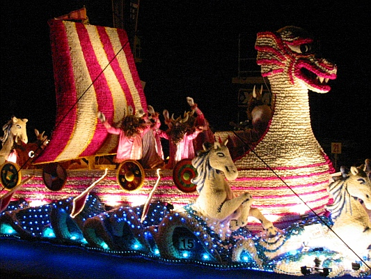

Moussieu l'Editeu,
Bein seux, Moussieu, ou voulez savez si j'avons idée, la Merrienne et mé, d'allé à la Bataille de Flieurs Jeudi tchi veint.
Et bein, Moussieu, nânin, je n'y'os en allons pon, et j'm'en vais vos dithe pourtchi.
La Merrienne avait qu'menchi à faithe ses prépathâtions y'a tchiques semaines. Oulle avait dêshallé le biau bonnet que sa grand'mèthe avait mint à la coronâtion d'la Reine Victoria, et avait couôsu des ribands et des fliers artificielles tout-l'tout, et même sûs l'haut, car, comme ou s'faisait, y faut dêmontré à chais Angliaises-là qu'y'a des gens à Saint-Ou tch'y connaissent la dernié mode. Et la robe de souaie de tchi qu'oulle avait héthité de sa grand'tante Souky, avait tait êtendue sûs l'liet dans la bouonne chambre après qu'la bouonnefemme avait pâssé l'fé d'sûs pour la faithe pathaitre comme neuve. Quant à mé, j'avais bringi man toppeur, tch'a tait à bétôt chent mathiages et entêrrements, sans pâslé d'baptêmes, et biétchiné les bouonnes bottes que j'avaient mint au show des Trais Pâraisses le jour que ma vaque fit l'championnat.
Mais, hélas! ch'tait du temps pérdu, et la Merrienne est prête à plieuthé quand oulle y pense. "Du travais inutile," ou s'fait, "mais enfin je séthai mûs pour une autre fais. Mais chein qu'je r'grétte, ch'est d'avé tait en ville l'autre jour sans man parapluie. Bein seux j'si j'l'avais yeu, y'éthait yeu pûs d'une tête câssée à l'hôpita chu jour-là!"
Pour vos dithe, Moussieu, ch'tait l'jour pour se protchuthé des billyets pour la Bataille, et la Merrienne s'en fut en ville de bouonne heuthe par la bus, pour, comme ou criyait, êvité la foule. Mais ou fut bein trompée, la pouore vieille, car quant ou r'vint ou n'avait pas d'billyets, et ou tait absolûment à but. Ch'n' tait qu'après qu'oulle eut avalé trais ou quatre tâsses de tais qu'ou put m'dithe chein tchi y'était arrivé.
"Quand j'appréchi d'la boutique à Mess de Gruchy," ou qu'menchi, "j'vit une foule de monde tch'y v'naient de touos les bords, et tch'y s'entre boustchulais et poussaient comme des acharnés. Les pièthes ch'tait les femmes, et jamais de ma vie j'n'ai veu une patheille démonstration de mauvaise humeur, de mauvais langage et d'sale manièthes. Vraiement, je n'sais pas comment qu'les gens sont êl'vés en Angliéterre!
"Enfin, je n'tais pas v'nue du Portinfé pour m'en r'allé comme une tchanne qu'a tait fouôtée, et je m'décidit d'faithe comme les autres. en faisant bouon ûsage de mes pids et d'mes coudes, sans pâslé d'ma langue, j'mènagit, un mio à la fais de m'faufilé jusqu'à une demié-perque de la porte ouèsque nous entre pour se protchuthé des bilyets, et j'avais ocquo bouonne espéthance de réussi, mais j'fut là ocquo une bouonne dem'ieuthe, d'vant pouvé entré, et dans l'entretemps j'en attrapais de touos les bords.
"Ch'tait un co-d'pid sûs la g'ville du pid, ou un coup d'coude dans les côtes ou dans l'pid du dos, et une scène comme j'n'avais jamais veu d'pis la dérnié séthée du grand bézaar à la chapelle, quand tout allait à bouon marchi. Y'a bein d's'années d'chonna, mais jamais j'n'ai r'oublié l'spéctaclye de toutes chais femmes prêtes à lûs entre dêchithé pour avé les miyeu bardgîns.
"Mais, man Ph'lip," quand à la fin j'me trouvit là, avec mes deux pièches d'êtchu dans ma main, et je d'mandit à la hardelle pour deux bouonnes pièches dans la miyeu position pour vais tout, ou m'informit sèquement que tout ch'qui réstait ch'tait deustrais sièges dehors à djais-sept ch'lins et d'mi la pièche. Ch'tait à chu moment-là qu'j'éthais voulu man parapluie, car si jamais j'ai r'grétté de n'puvé pas capuchi qune personne sûs l'haut d'la tête ch'tait à chu moment-là. Verse-mé ocquo une tâsse de tais, Ph'lip, car je m'trouve bein fâillyie."
Et donc, Moussieu, ou comprendrez ach'teu, pourtchi qu'les organisateurs de chutte fête éthont à s'graie sans nous. Par chein qu'j'en vais, la Merrienne, toute meurtrie comme oulle est, s'sa au liet pour tchiques jours, et ch'est mé tch'étha à faithe tout l'travas d'la maison. A m'n'âge je trouve que ch'est bein du."
Ph'lip
Les Chroniques de Jersey 25/7/1953
Viyiz étout: